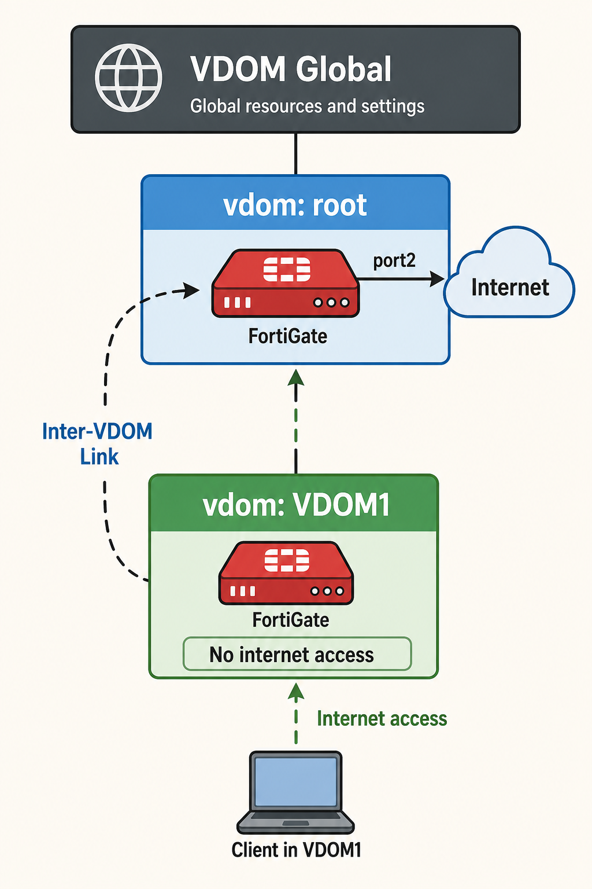
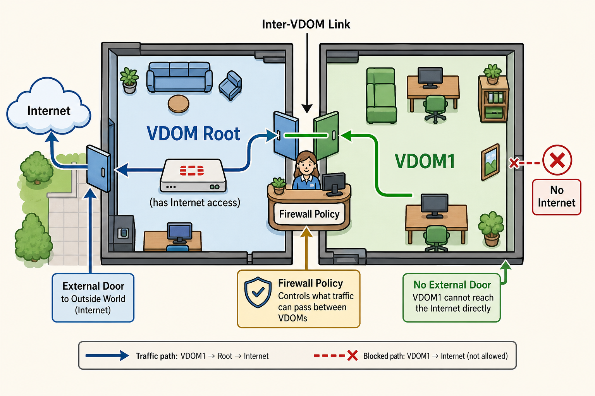
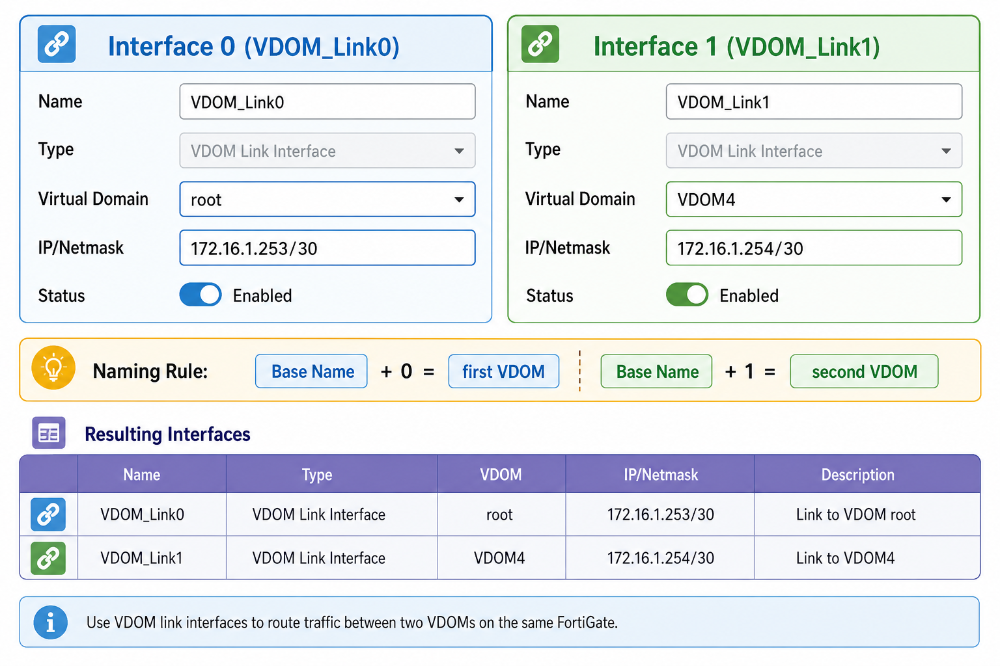
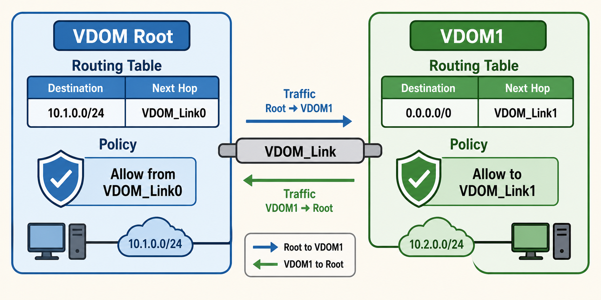

Master VDOM link creation, interface naming conventions, routing and policy requirements — the final piece that makes isolated VDOMs cooperate in a real enterprise network.
VDOMs are isolated by design — VDOM links are the controlled exceptions that let them share resources.
This subtopic covers the mechanics of VDOM links, interface naming (the 0/1 convention), static and dynamic routing over links, and inter-VDOM firewall policies.
💭THINK FIRST · WHY VDOM LINKS
VDOMs are completely isolated from each other by default — no traffic can pass between them without an explicit connection. An inter-VDOM link creates a virtual cable between two VDOMs, eliminating the need for a physical cable looped between two ports.
Why is an inter-VDOM link preferable to physically looping a cable between two FortiGate interfaces to connect two VDOMs?
Besides internet sharing, what other type of connectivity can an inter-VDOM link facilitate between two VDOMs?
Q1 — MODEL ANSWER
A physical cable loop wastes two physical interfaces, introduces a potential hardware failure point, and consumes port resources. An inter-VDOM link uses virtual interfaces — no physical cable or ports needed. It's more scalable, reliable, and resource-efficient. You can create multiple VDOM links without any physical connectivity changes.
Q2 — MODEL ANSWER
Beyond internet sharing, an inter-VDOM link facilitates connectivity between the networks of different VDOMs — for example, allowing users in VDOM1's LAN to reach servers in VDOM2's network, or enabling a shared DMZ VDOM to serve multiple traffic VDOMs. Any routing or policy-based connectivity between isolated VDOMs can be achieved through inter-VDOM links.
SECTION 01
Why Inter-VDOM Links — Controlled Isolation

images/s1-inter-vdom-use-case.png
Flat colorful illustration: vertical stack — VDOM Global (dark bar, top), below it "vdom: root" (blue box, connected to an internet cloud on the right via a "port2" arrow), below root "vdom: VDOM1" (green box, labeled "No internet access"). A dashed curved arrow labeled "Inter-VDOM Link" connects VDOM1 to root on the left side. A laptop icon below VDOM1 with "Internet access" arrow pointing up through the link to root then to internet. Pastel palette, bold outlines, no shadows, educational style.
Use Case 3: VDOM1 has no direct internet — it routes through root VDOM via an inter-VDOM link.
By default, VDOMs are completely isolated — no traffic can flow between them. An inter-VDOM link (also called a VDOM link) creates a virtual interface pair connecting two VDOMs, eliminating the need for a physical cable looped between two FortiGate ports.
The primary use case is internet sharing: if VDOM1 does not have a direct internet-facing interface, it can reach the internet through the root VDOM's interface via an inter-VDOM link. The inter-VDOM link provides a routed path from VDOM1 to root.
Inter-VDOM links also enable network-to-network connectivity — allowing users in one VDOM's network to reach servers or resources in another VDOM's network through a controlled, policy-enforced path.
Key benefit: Inter-VDOM links are virtual — they consume no physical ports, introduce no hardware failure points, and can be created as needed without physical changes to the FortiGate device.
🧠
MENTAL NOTE
Inter-VDOM links = virtual cable between VDOMs. No physical ports consumed. Two uses: (1) share internet access from one VDOM to another, (2) connect networks across VDOMs. Traffic requires routing AND firewall policies on both sides.
Analogy
An inter-VDOM link is like a private internal hallway between two adjacent office suites that share a building — without it, occupants must exit the building (use a physical cable) to visit each other.
Each VDOM — a separate leased office suite with its own locked door and independent operations
Inter-VDOM link — the internal connecting door between two suites: no need to go outside; the building's security (FortiGate) still monitors who passes through
Firewall policy on the link — the receptionist at the internal door: not everyone can walk through — each visit requires explicit approval (a matching policy)

📷 images/a1-vdom-link-hallway.png — add this image to the folder
Cartoon illustration in pastel style: top-down floor plan of a building. Left suite labeled "VDOM Root" (blue) — has a door to outside world (internet cloud). Right suite labeled "VDOM1" (green) — no outside door. Between them: a internal connecting door labeled "Inter-VDOM Link" with a small receptionist desk blocking it labeled "Firewall Policy". An arrow flows from VDOM1 through the internal door and out to the internet via root's external door. The external wall between VDOM1 and outside has a red "X No Internet" sign. Bold outlines, pastel colors, no shadows, educational infographic style.
ASK A QUESTION
ADD A NOTE
💭THINK FIRST · VDOM LINK CONFIGURATION
When you create a VDOM link named "VDOM_Link," FortiGate automatically creates two interface instances — one for each VDOM in the pair. The naming convention appends 0 and 1 to distinguish which end belongs to which VDOM.
If you create an inter-VDOM link named "Corp_Link" between the root VDOM and VDOM1, what will the two resulting interface names be — and which VDOM gets which interface?
Creating a VDOM link alone is not enough to enable traffic — what two additional configurations are required before traffic can actually flow?
Q1 — MODEL ANSWER
FortiGate creates Corp_Link0 and Corp_Link1. Interface 0 is assigned to the first VDOM listed (typically root), and Interface 1 is assigned to the second VDOM (VDOM1). This 0/1 convention is automatic — you cannot choose which number goes to which VDOM; it's determined by the creation order. The naming helps administrators quickly identify which end of the link belongs to which VDOM.
Q2 — MODEL ANSWER
After creating a VDOM link, you must configure: (1) routing — either static routes or dynamic routing protocol on each VDOM's side of the link interface, so each VDOM knows how to forward packets through the link; and (2) firewall policies — at least one policy on each VDOM allowing traffic to enter and exit through the VDOM link interfaces. Without both, traffic will not pass even though the link exists.
SECTION 02
VDOM Link Configuration — Creating the Virtual Pipe

images/s2-vdom-link-config.png
Flat colorful illustration: two-column form diagram. Left column "Interface 0 (VDOM_Link0)" — Virtual Domain dropdown showing "root", IP/Netmask "172.16.1.253/30". Right column "Interface 1 (VDOM_Link1)" — Virtual Domain dropdown showing "VDOM4", IP/Netmask "172.16.1.254/30". Below both: a legend showing the naming rule "Base Name + 0 = first VDOM, Base Name + 1 = second VDOM". A small table below shows the resulting interface list with type "VDOM Link Interface". Pastel palette, bold outlines, no shadows.
One VDOM link creates two virtual interface instances — appended with 0 and 1 — one per VDOM.
To create an inter-VDOM link, navigate to Global VDOM > Network > Interfaces > Create New > VDOM Link. You provide a base name for the link, and FortiGate automatically creates two interface instances — one per VDOM — by appending 0 and 1 to the name.
For example, a VDOM link named VDOM_Link creates:
VDOM_Link0 — Interface 0, assigned to the root VDOM (172.16.1.253/30)
VDOM_Link1 — Interface 1, assigned to VDOM4 (172.16.1.254/30)
This naming convention — appending 0 and 1 — allows administrators to instantly identify which end of the link belongs to which VDOM. The two interfaces appear under their respective VDOMs in Network > Interfaces.
FortiGate GUI Path — Create VDOM Link
# Navigate to: Global VDOM > Network > Interfaces > Create New > VDOM Link
# Name: VDOM_Link
# Interface 0:
# Virtual Domain: root
# IP/Netmask: 172.16.1.253/30
# Interface 1:
# Virtual Domain: VDOM1
# IP/Netmask: 172.16.1.254/30
# Result in interface list:
# VDOM_Link (parent VDOM Link entry, type = VDOM Link)
# VDOM_Link0 (assigned to root, type = VDOM Link Interface)
# VDOM_Link1 (assigned to VDOM1, type = VDOM Link Interface)
Exam tip: The 0/1 naming convention is automatic — you cannot choose which number is assigned to which VDOM. Interface 0 goes to the first VDOM configured (typically root), Interface 1 to the second. Knowing this naming pattern is testable when interpreting interface lists.
🧠
MENTAL NOTE
Create VDOM link at: Global VDOM > Network > Interfaces > VDOM Link. One link = two virtual interfaces: BaseName0 (first VDOM) + BaseName1 (second VDOM). Both appear in their VDOM's Network > Interfaces. Each side needs an IP address for routing.
ASK A QUESTION
ADD A NOTE
💭THINK FIRST · ROUTING OVER VDOM LINKS
A VDOM link creates the virtual interface pair — but traffic won't flow until each VDOM knows how to reach the other's networks via routing. This is identical to configuring routing on any other interface: you can use static routes or dynamic routing protocols.
For a VDOM1 host to reach the internet through root VDOM via a VDOM link, which VDOM needs a default route pointing to the link interface — and which VDOM needs a route back to VDOM1's subnet?
Can you run a dynamic routing protocol (such as OSPF or BGP) over a VDOM link interface the same way you would over a physical interface?
Q1 — MODEL ANSWER
VDOM1 needs a default route (0.0.0.0/0) pointing to the VDOM_Link1 interface (or the link's next-hop IP on root's side), so internet-bound traffic exits toward root. Root needs a specific route pointing to VDOM1's internal subnet (e.g., 10.1.0.0/24) via VDOM_Link0, so return traffic can find its way back to VDOM1. Without the return route on root, connections will be one-way and packets won't return.
Q2 — MODEL ANSWER
Yes — VDOM link interfaces are treated as normal network interfaces for routing purposes. You can enable OSPF, BGP, or other dynamic routing protocols on VDOM link interfaces just as you would on a physical WAN or LAN interface. Dynamic routing over VDOM links is common in complex VDOM deployments where routes need to be automatically exchanged between VDOMs.
SECTION 03
Routing and Policies Over VDOM Links

images/s3-routing-vdom-link.png
Flat colorful illustration: two side-by-side boxes — "VDOM Root" (blue) and "VDOM1" (green) — connected by a horizontal "VDOM_Link" bar in the middle. In the Root box: a routing table showing "10.1.0.0/24 → VDOM_Link0" and a policy shield icon labeled "Allow from VDOM_Link0". In the VDOM1 box: routing table showing "0.0.0.0/0 → VDOM_Link1" and a policy shield icon labeled "Allow to VDOM_Link1". Arrows showing traffic flow left-to-right and right-to-left. Pastel palette, bold outlines, no shadows.
Both VDOMs need routing entries AND firewall policies — traffic flows through the link only when both sides are configured.
A VDOM link alone does not enable traffic. Two additional configurations are required on each VDOM:
Routing — static routes or a dynamic routing protocol telling each VDOM how to reach the other's networks via the link interface
Firewall policies — explicit allow policies on each VDOM permitting traffic to enter and exit through the VDOM link interface
For the internet-sharing scenario (VDOM1 accessing internet via root):
Allow outbound from VDOM1 LAN → VDOM_Link1 (to root)
Root
Specific route to VDOM1 subnet → VDOM_Link0 (toward VDOM1)
Allow inbound from VDOM_Link0 → WAN (internet-facing interface)
VDOM link interfaces support static and dynamic routing (OSPF, BGP) exactly like physical interfaces. In complex multi-VDOM deployments, dynamic routing over VDOM links is common to automatically exchange routes as network topology changes.
Exam gotcha: Forgetting the return route is one of the most common inter-VDOM routing mistakes. Even if VDOM1 can send traffic to root, if root has no route back to VDOM1's subnet, return packets are dropped. Always configure routes AND policies on BOTH sides of the link.
🧠
MENTAL NOTE
VDOM link = 3-step config: (1) Create the link (Global VDOM), (2) Add routes on both sides, (3) Add firewall policies on both sides. Static or dynamic routing both work. Return route on the "receiving" VDOM is easy to miss — always configure both directions.
ASK A QUESTION
ADD A NOTE
💭THINK FIRST · POLICIES AND COMPARING VDOMS
The VDOM comparison table consolidates all the key differences in one place. Traffic NAT and LAN Extension support 10 VDOMs by default (expandable with licensing), while Admin is limited to exactly 1 per FortiGate. Understanding the deployment scenario for each type is an exam favorite.
Traffic VDOMs in NAT mode appear in four deployment acronyms: ISFW, DCFW, NGFW, and DEFW. What do these abbreviations stand for and how does a Traffic NAT VDOM serve each scenario?
Which VDOM type is most appropriate for a scenario where you want to add UTM security scanning to a Layer 2 segment without changing any IP addressing or routing in that segment?
Q1 — MODEL ANSWER
ISFW = Internal Segmentation Firewall (segments internal networks), DCFW = Data Center Firewall (protects data center traffic), NGFW = Next-Generation Firewall (inspects application-layer traffic with IPS, App Control), DEFW = Distributed Enterprise Firewall (branch/distributed sites). A Traffic NAT VDOM serves all four because it operates as a full Layer 3 firewall with routing, NAT, and all security profiles available.
Q2 — MODEL ANSWER
Traffic VDOM in Transparent mode is the correct choice. It operates at Layer 2 — placed inline between network segments — and performs UTM scanning without requiring any changes to IP addressing, default gateways, or routing. It is "invisible" to the IP layer, so the existing network sees no topology change, making it ideal for inserting firewall inspection without disruption.
All four VDOM types compared — Admin is the only type that cannot pass user traffic.
Firewall policies on VDOM link interfaces follow the same rules as policies on any other interface. Each VDOM needs its own policies to allow traffic through the link:
In the source VDOM: a policy allowing traffic from the internal network toward the VDOM link interface
In the destination VDOM: a policy allowing traffic arriving on the VDOM link interface toward the internet or target network
The complete VDOM type comparison:
VDOM Type
Traffic?
Default Count
Operation
Typical Deployment
Admin
No
1 (max 1)
Management only
Management networks (ISFW, DCFW, NGFW, DEFW)
Traffic NAT
Yes
10*
Layer 3, routing+NAT
ISFW, DCFW, NGFW, DEFW
Traffic Transparent
Yes
10*
Layer 2, inline
Anywhere Layer 2 analysis needed
LAN Extension
Yes
10*
IPsec + VXLAN
ISFW, NGFW, DEFW (remote connectivity)
* Traffic NAT and LAN Extension can exceed 10 with additional licensing. Admin VDOM is always limited to 1 per FortiGate.
Lab scenario context: The Lab 3 exercise for this chapter builds exactly this architecture — enabling VDOMs, creating two additional VDOMs (Zone1, Zone2), configuring VLANs for each, and then setting up inter-VDOM routing through the root VDOM for internet access using VDOM links, static routes, and firewall policies.
🧠
Admin = 1 max, no traffic. Traffic NAT/Transparent + LAN Extension = 10 default (expandable). Transparent mode = Layer 2 UTM without IP changes — best for inserting security into an existing segment without topology disruption. Inter-VDOM policies: one policy per direction, per VDOM.